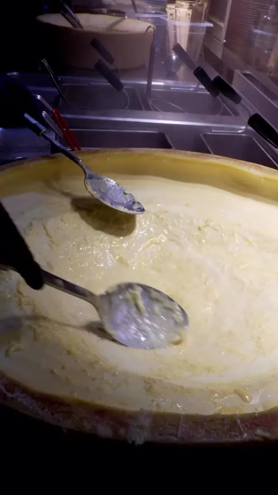
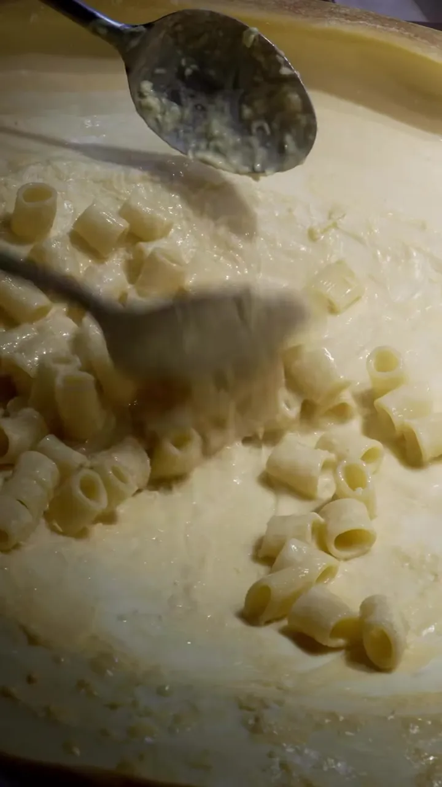
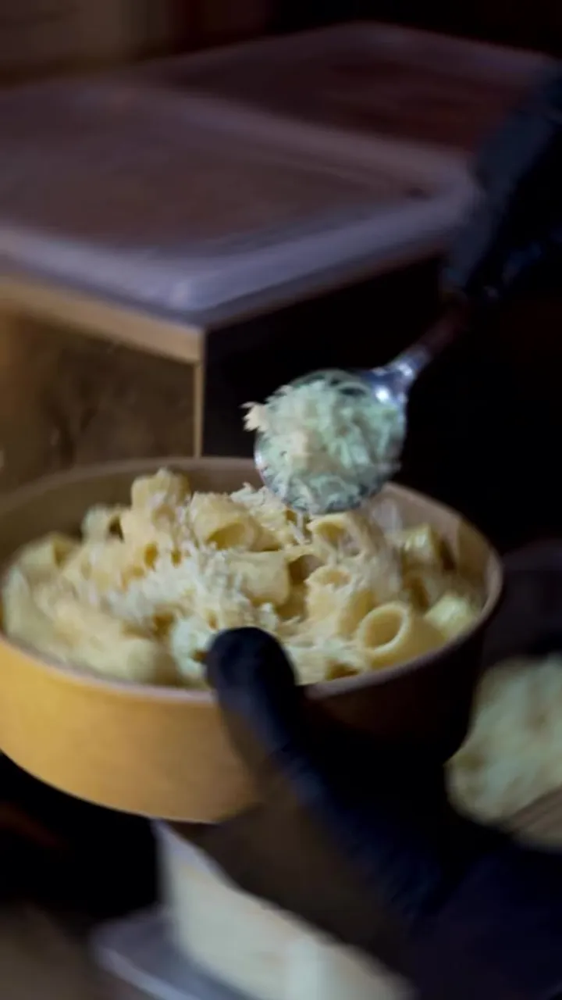
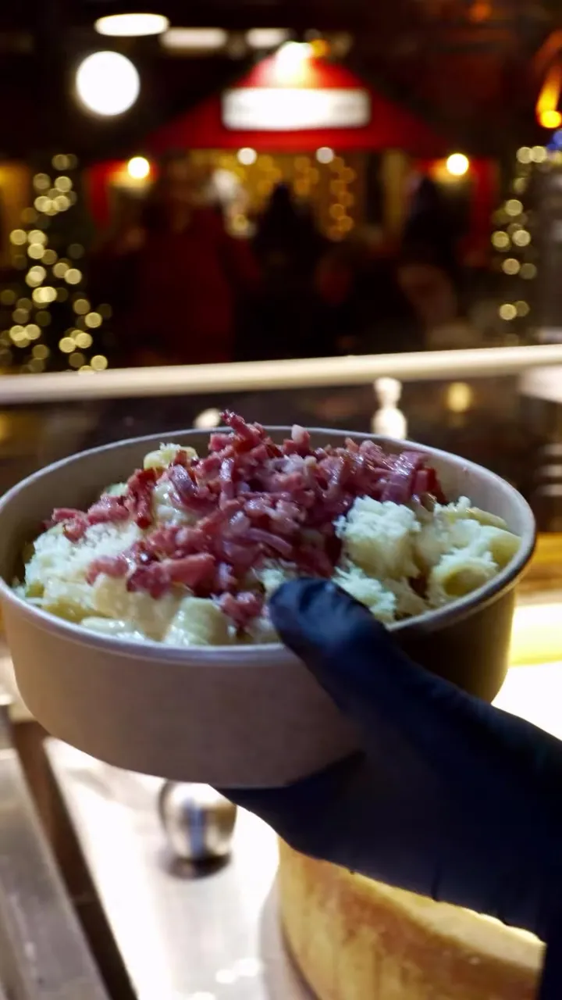
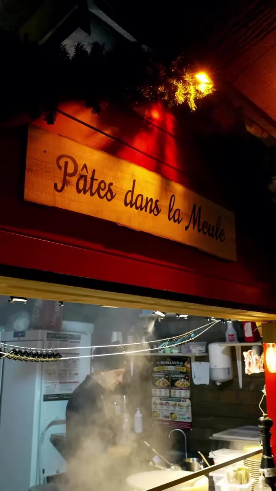

La Carbruyère
Mezze maniche rigate fraîches, Gruyère AOP affiné 13 mois, jaunes d'œufs suisses et lardons suisses bien dorés. La carbonara, version suisse.

Montreux Noël
Des pâtes fraîches mélangées sous vos yeux dans une meule de Gruyère AOP affiné 13 mois.
Le geste
Un Gruyère AOP affiné 13 mois, de la Fromagerie du Haut Jorat.

Les pâtes fraîches, encore fumantes, tournées dans le fromage.

Servi tout de suite, dans votre bol, sur le marché.

La Carbruyère, au chalet
La carte
Mezze maniche rigate fraîches, Gruyère AOP affiné 13 mois, jaunes d'œufs suisses et lardons suisses bien dorés. La carbonara, version suisse.
La recette romaine, pour ceux qui préfèrent l'originale.
Nous trouver

Après le marché
Mariage, fête d'entreprise, anniversaire : le spectacle de la meule pour vos invités. Écrivez-nous pour en parler.